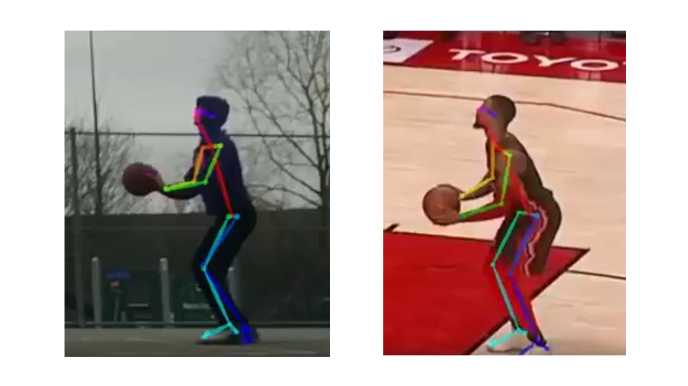

Check out some of the projects that I've worked on!
ForeSight
Flutter, AWS EC2, Python, PyTorch
BBall Track
OpenPose, Python, PyTorch
KLARR-NET
Python, PyTorch, Viola Jones
407 ETR Toll Calculator
HTML, CSS, Javascript
Messenger Bot
Python, Facebook Messenger API
FES Coaching System
Python, National Instruments DAQ
SimpleMaps
C++, OpenStreetMaps API
Project Probst
In Progress
Project Kirk
In Progress
Thomas Nguyen
B.A.Sc in Computer Engineering with Honours | University of Toronto (Class of 2021)
I am a Software Engineer, currently working at Amazon (Toronto). I believe that in order to succeed in the fast-paced, ever-evolving industry of software engineering,
one must be willing to constantly learn and adapt alongside the industry.
I was born and raised in Toronto, Canada but love travelling to new places.
I'm an avid NBA basketball fan (go Celtics)!
In my spare time I like to play basketball, paddle on the water (dragonboat), and run.
I've paddled in Hungary in 2018 and will hopefully be on the 2021 Team Canada roster!
An Android app that screens potential medical conditions to motivate users to seek medical attention when required.
Video
Links
You can download this app on the Google PlayStore!
The codebase for this project can be found on my GitHub.
The academic poster can be found here.
Documentation describing the project design process, testing, and verification can be found here.
Timeline
August 2020 - May 2021
Languages & Tools
Flutter Dart
Python, PyTorch, Tensorflow
AWS EC2, Docker
Team
Soo Yeon Cho
Thomas Nguyen
Chris Pua
Matthew Won
Overview
7 in 10 of Canadians skip seeing doctors due to long wait times, timelessness, and other barriers. Another study found that delays in receiving medical attention such as waitlist times can be fatal,
leading to at least 20,000 deaths in Canada between 1993-2009. Barriers preventing people from accessing healthcare often lead to worsening health conditions and sometimes, death. Those who want information on
their potential condition but do not have the time to receive a professional diagnosis must turn to alternatives that are either inaccurate or costly.
Therefore, for our 4th year capstone design project, the team developed ForeSight, a mobile medical application that provides users a screening of their potential condition at no charge
so that they may be well informed when deciding whether or not their condition requires further professional medical attention. ForeSight is presented in the form of a mobile application
where users can upload or capture images to the application, which sends it to a machine learning model trained to identify medical conditions. Currently supported medical conditions are onychomycosis,
commonly known as nail fungus, and basal cell carcinoma, a common type of skin cancer. As the team does not have an extensive medical background, this prediction is strictly a screening and not a diagnosis.
ForeSight currently achieves an onychomycosis screening accuracy of 87% and basal cell carcinoma screening accuracy of 86%. Though these metrics are promising, the team recognizes that there are additional
steps that must be taken in order to recognize ForeSight as a complete medical screening product, such as more extensive user training and a medical review of the product by medical professionals.
System Design
The front-end application was created using Flutter and is compatible for Android devices. It uses a camera and contains an API Caller module which enables communication between the user and the middleware.
The middleware uses the EC2 cloud service provided by AWS to host the best performing machine learning model and the API Handler. The API Handler manages the communication between the front-end and the hosted model.
The back-end is the process that prepares the best performing machine learning model. This process involves building out the architecture of the model, gathering public image data for training purposes,
and training the model to make adjustments to the model to reach the required accuracy. The model was created using PyTorch. Once the best performing model is created, it uses a flask application and docker
container to send a copy of the model to be hosted on the middleware’s cloud.
To ensure viability of the app, the team wanted the ML model to be able to detect medical conditions from different body parts, as well as screen medical conditions in which early detection would be beneficial
for the users. As such, the team decided to implement screening for basal cell carcinoma and onychomycosis. Onychomycosis, more commonly referred to as nail fungus, is generally painless early on, but
can lead to more severe infections and possibly amputations if left untreated [15]. Basal cell carcinoma is a skin cancer that, if detected early enough that the tumour has not spread to other sites,
has a 100% survival rate [16]. As such, the team is very satisfied to have been able to implement those two conditions to a considerably high final testing accuracy.
Testing & Verification
782 images reserved for testing only (i.e not used in model training) were run against the team’s best performing ML model. The model achieved a final testing accuracy of 85.68%, which is greater than the approxiate 85%
accuracy of a dermatoligist. The team compared this 85.68% screening accuracy against existing medical screening applications. Out of a study, the most accurate medical screening application was Ada, a questionnaire-based
screening application, with a correct prediction rate of 71%. The testing measurements were also comparable to an onychomycosis application created by a Korean research team, which had an accuracy of 84.2%.
Though this accuracy measurements are greater, we do not believe this necessarily means that our ML model is better, as we have not done nearly as much extensive testing on real patients as the aforementioned products have.
Acknowledgements
Professor Hamid Timorabadi, Supervisor, University of Toronto
Seung Seog Han, onychomycosis researcher
Gyeong Hun Park, onychomycosis researcher
BBall Track - Free Throw Analysis via OpenPose Data
A data-centric biomechanical analysis of basketball free throws leveraging the capabilities ML limb segment detection.

Links
Our final presentation deck can be found here.
Our GitHub repository can be found here.
Timeline
January 2021 - April 2021
Languages & Tools
OpenPose
Python, PyTorch
Team
Christopher Calogero
Francis Gomes
Thomas Nguyen
Kevin Wang
Motivation
With the rise of the important of data analytics in basketball, specifically the NBA, we wanted to perform a study on what makes some players more accurate free throw shooters from
a biomechanical perspective.
Researchers have proposed several "ideal" free throw shooting methods, such as striving for a high shooting arc (55-60°), a maximum range angle of 45°, or a minimum-speed angle.
What makes determining the "ideal" free throw difficult is that the free throw is a submaximal velocity task, meaning there are an infinite combination of launch parameters than can lead to a made basket.
Methods
The team used OpenPose to collect data points of three relatively accurate NBA free throw shooters (Stephen Curry - 92%, Damian Lillard - 93%, and Karl-Anthony Towns - 88%) and three novice free throw shooters (40% average accuracy).
The team then created several Python scripts to extract meaningful data from the raw coordinates. Specifically, the team used anthropomorphic data of the shooters to extract angles and velocities of the shoulder, elbow, wrist, and trunk.
Analysis & Results
Center of Mass (COM)
Calculations: Trunk inclination angle (°), COM Horizontal Motion (m/s), COM Vertical Motion (m/s).
Conclusions: Zero COM velocity is optimal, and trunk inclination has minimal effect.
Shooting Shoulder and Elbow
Calculations: Shoulder and Elbow angle (°), Shoulder and Elbow anglular velocity (rad/s).
Conclusions: Greater shoulder flexion leads to greater release height and margin of error, angular velocities determine release velocity and elbow angular velocity should be much greater than that of the shoulder.
Knee Flexion and Extension
Calculations: Maximum knee flextion prior to release (°), knee flextion at release (°).
Conclusions: Biomechanically, more knee flexion results in a more forceful knee extension in the extension phase. For example, some advocate for a deeply-flexed position to allow for a much higher force production
from the legs during the extension phase. Given the trend in NBA players, for a short-range shot like the free throw, forceful knee extension may not be required like it would in a longer range jump shot.
A reason for this is that ankle flexion is also used for lower body force production.
KLARR-NET - Facial Emotion Recognition via Webcam
A machine learning model trained to detect between 7 human facial emotions using a computer webcam.
Video
Links
Documentation describing the project design process, testing, and verification can be found here.
Our GitHub repository can be found here.
Timeline
September 2020 - December 2020
Languages & Tools
Python, PyTorch, Viola Jones
Team
Eliano Anile
Thomas Nguyen
Kevin Raihanizadeh
Lucas Rea
Motivation
Facial emotion recognition (FER) is a skill inherent in human beings, described as the ability of one to determine another person’s emotions from only their facial expressions.
The team found this interesting, as one’s FER capabilities are the result of their upbringing and environment, among many other factors. The goal of the project is to mimic this innate human
skill using a Convolutional Neural Network (CNN) to determine how accurately it can perform FER. The team believes that, if FER networks can be made accurate, it can be used in a variety of ways, including the enforcement
of driving safety by detecting subtle changes in facial expressions related to drowsiness and drunkenness.
Data Processing
The main dataset that was used for primary model training and tuning was the FER 2013 dataset from Kaggle, containing ~36,000 images. This dataset was split into train and test folders, with an approximate split of
70% training data and 30% testing data. Each training and testing folder was split into a folder for each of the 7 major facial expressions: angry, disgust, fear, happy, neutral, sad, and surprise.
The initial folder structure and split statistics can be found in Figure 5(a). Images in this dataset are of size 48x48.
The data was manually processed to ensure that the model was trained and tested on images representative of the use cases that the team expected the model to encounter during real use cases (webcam and camera).
The next step in processing the data was to consolidate the training and testing folders into one main data folder consisting of the 7 facial expression subfolders. The reasoning for this was that the team was
unsure of the data split to use at the time of data cleaning, but was leaning towards a split of 70% training data, 15% validation data, and 15% testing data. Therefore, the team decided to programmatically split
the data, which meant only one main folder was needed and not individual training, validation, and testing folders. As there were very few images for “disgust” relative to all the other emotions, the team decided
to omit this emotion from the dataset and moved it to a subfolder for unused data. Inversely, as there were many more images for “happy”, the team decided to reduce this number of images and move it to the unused
subfolder as well.
Model Architecture
The architecture of the final model is illustrated above and consists of a CNN used for feature extraction followed by an ANN for classification. The input to the CNN is a 48x48 image with 1 feature due to the
image being greyscale. The CNN has in total 5 convolutional layers with 3x3 kernels; the first four convolutional layers followed by a 2x2 max pooling layer to reduce the dimensions of the feature maps, while
the fifth convolutional layer is followed by a 2x2 average pooling layer. After the first two convolutional and pooling layers the team applies a batch normalization layer followed by a dropout layer with
probability of 25%. Batch normalization is used to normalize activations that are abnormally high or low, accompanied by a dropout layer to counteract overfitting. Once the fifth and final convolutional
layer is complete, batch normalization and dropout is again applied to ensure overly fitted activations created in intermediate convolutional layers are normalized. The output of these layers is fed into
an ANN, the input to it after being processed by the CNN contains 256 features of size 3x3. The ANN is made up of two linear layers with 50 hidden units and 6 output units that classify the input image to
its corresponding output emotion.
Testing & Verification
The model’s results were evaluated using different metrics. The team took overall accuracy measurements as well as per-class accuracy measurements via confusion matrices. During training, our model’s validation accuracy
peaked at iteration 13, and the overall accuracy of the model sits at about 76.3% for training data, 52.8% for validation data, and 52.6% for testing data. Though this measurement is insightful, it doesn’t give us a
good representation on how the individual classes perform. For facial expression recognition, each class has vastly different features so it’s important to get a good understanding of how each expression performs.
Analyzing the output, it is clear the model underperforms with the ‘fear’ class compared to other classes such as ‘happy’. This evidence is backed up by the confusion matrix results. This is due to emotions such as
‘happy’ and ‘surprise’ which the model performs well on having distinct features (open mouth or smile) while fear is more subjective, varying from person to person.
To ensure that the model generalizes well, the model was evaluated against two datasets: one containing images taken of the team members, and another from the RADIATE dataset containing faces of minority
ethnicities obtained from a Yale public repository.
The model’s performance on new datasets was as follows:
RADIATE dataset:
Number of images: 766
Accuracy: 19.6%
Dataset containing the team’s faces:
Number of images: 48
Accuracy: 60.4%
407 ETR Toll Calculator
A web application that estimates customer trip cost on the 407 Express Toll Route (ETR)
Link
The official 407 ETR Toll Calculator can be found here.
Timeline
May 2019 - December 2019
Languages & Tools
HTML, CSS, Javascript
Google Maps API
Apache Maven
Overview
The 407 ETR Toll Calculator is a geographical information system (GIS) that allows customers to estimate the cost of a trip on the 407 ETR using trip characteristics such as entry and exit,
time of day and vehicle type. This application communicates with the Google Maps API as well as 407 ETR servers to display highway interchange locations and provide accurate cost calculations for any customer trip.
Implementation
The application was implented primarily in HTML, CSS, and Javascript. My contributions were in the form of application enhancements, performance improvements, and bug fixes. Most notably,
I refactored the Javascipt and data handling to reduce application start-up times, as well as lessen computing time and input latency. Overall, there was a 25% performance improvement.
407 ETR Facebook Messenger Bot
A smart chat bot integrated with Facebook Messenger that notifies customers of the 407 ETR of account details and real time statistics such as accidents,
congestion, trip capture status, and billing information. Artificial intelligence implemented to learn user routines and send relevant notifications
Timeline
July 2019
Languages & Tools
Python
Facebook Messenger API
Chatfuel, Twilio
Team
Shudmanul Chowdhury
Thomas Nguyen
Chris Stelphach
Sheree Zhang
Overview
As part of the internal 2019 407 ETR Summer Hackathon, my team wanted to address an existing gap in the 407 ETR's services. With the release of the 407 ETR mobile app, the company wanted as
many 407 ETR users to have the app as possible. We recognized that many customers would likely not feel the need to download the new app. If they were able to get by without the mobile app
thus far, they may feel the tedious onboarding process associated with downloading a new app is not worth it. In other words, after a long time without an app, it would be difficult to overcome
the intertia and develop new habits just for using the 407 ETR's services. To address this, we decided to implement a smart chat bot that would act as a lighter version of the 407 ETR app,
providing services the user may find useful and acting as a gateway to downloading the mobile app. The team analyzed most commonly used messenging apps and discovered that Facebook Mesenger
was the most commonly used messaging app among North Americans.
Implementation
This chat bot is a smart chat bot integrated with Facebook Messenger that notifies customers of the 407 ETR of account details and real time statistics such as accidents, congestion, trip capture
status, and billing information. Bot would use AI to record customer’s regular trips and, using live information, inform user to leave earlier or later than usual depending on live highway status and weather.
This application was implemented using Python and Facebook Messenger API, which communicated to existing 407 ETR APIs to link user messenger accounts to their 407 ETR transponder or license plate.
Functional Electrical Stimulated Rowing Coaching System
Researched and developed a coaching system for patients rehabilitating from partial spinal cord injuries (SCI)
Link
The paper written by the masters student I worked under can be found here.
Timeline
May 2018 - August 2018
Languages & Tools
Python, PyQt
National Instruments Data Acquisiton Unit (NI DAQ)
National Instruments LabView NXG
Team
Thomas Nguyen
Pirashanth Theventhiran
Overview
Functional electrical stimulation (FES) is a non-invasive rehabilitative technology used to produce artificial contractions in muscles. This technology has been used on
individuals with incomplete spinal cord injuries (iSCI) to enable them to perform rehabilitative rowing exercise, which combines the voluntary movement of the upper body
with stimulated movement of the lower body. FES is often activated manually by the user, who often require months to achieve effective rowing technique with accurate FES
timing. With that in mind, the goal of this application was to develop a rowing coaching system that, in real time, displays instructions on when to administer FES.
Implementation
In order to enable users to administer FES as well as monitor their force output, a Concept 2 rowing ergometer was attached with plate sensors, motion capture markers, and
an FES trigger for user-administration of FES. The iSCI users would then have electrodes attached to their quadriceps and hamstring muscles, the muscles in which the FES would induce contraction.
The front end of this application was created using Python and PyQT5 to create the graphical user interface (GUI). The application was designed to be as intuitive as possible
for the user and lower the technical barrier of entry typically associated with rowing. Users were able to set exercise parametrs and then visual as well as audio queues would
be given to notify the user when to administer FES.
Data acquisition was done using a National Instruments Data Acquisition Unit (NI DAQ). This DAQ was connected the rowing ergometer to the application and analyzed user-administered
FES timing. Based on the analysis, feedback would be given to the user.
SimpleMaps
A graphical information system (GIS) of the world's major cities that includes features such as route planning, points of interest, and a fully featured search bar
Timeline
January 2018 - April 2018
Languages & Tools
C++ (Dijkstra, A*, multithreading, simulated annealing, 2-opt)
OpenStreetMap API
OpenGL
Team
Haley Cao
Chandra Gummaluru
Thomas Nguyen
Overview
Our geographical information system (GIS), SimpleMaps, was a semester long project for the second year University of Toronto course ECE297: Design and Communication.
The goal was to create an application to map major cities in the world using the OpenStreetMap database. In a group of three, we were to create the application and include
as many features as time permitted. This project was a lot of fun as this was the first major project that I had created, and the amount of freedom given to us in terms of
data structures and algorithms led to a lot of growth as a software engineer.
Implementation
The program was implemented in four stages to simplify the development process. The main objectives throughout this project was to make SimpleMaps minimalistic and responsive.
The first stage was to implement relevant basic functions, as well as define and initialize necessary data structures. Precautions were taken to minimize time complexity of these
functions by selecting optimal data structures (ie. maps, unordered maps, tries, lists). In order to ensure SimpleMaps performance for the user, many data structures were initialized
on application start which meant faster run time at the cost of higher memory consumption.
The second stage was to create the graphical user interface (GUI) using OpenGL as well as implement additional features. First we added natural features, building names, as well as
street names and directions to the SimpleMaps GUI in familiar or intuitive colours. Following that, we added coloured-icon markers on the map for points of interest and added a search
bar where the user can search for streets, intersections, points of interest, and even cities. The search bar was given added functionality by supporting fuzzy search, text-prediction, and auto-complete using tries.
The third stage was to implement a shortest-path algorithm to get from a starting location in SimpleMaps to an ending location. The goal of this step was to determine the most optimal
route in terms of travel time and display this route in the SimpleMaps GUI. The shortest-path algorithm was implemented using a Dijkstra-A* hybrid. For searches from a specific location
to a non-specific destination, SimpleMaps would use Dijkstra to return the closest destination matching the search criteria. For searches from a specific location to a specific destination,
SimpleMaps would use A* to return the shortest path in terms of travel time to the unique destination. This hybrid algorithm resulted in run times 700% faster than the time limit provided by course instructors.
The final stage was to implement a solution to the travelling salesman problem, where there are 'packages' with a pickup and corresponding dropoff location. The goal of this step was to devise
the most optimal route in terms of travel time for any given set of 'packages' in any city. The initial implementation was a modified greedy approach, where the algorithm would first pickup
the nearest package, then either pickup another package or drop off a package depending on which was closest. Further implementations included 2-opt, multithreading, and simulated annealing to
improve the algorithm. The final implementation was 300% faster than the initial greedy implementation and resulted in our team finishing 21st out of the 110 teams involved in the course.